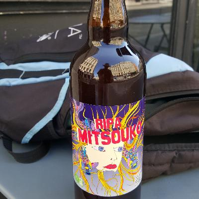
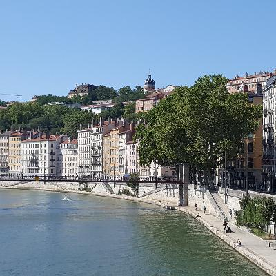
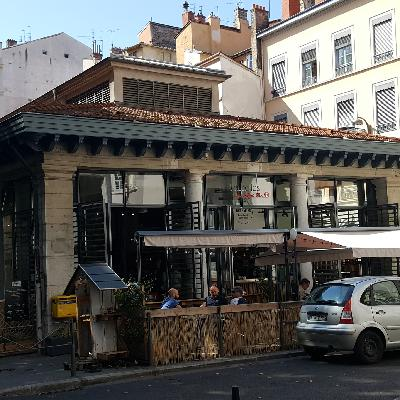
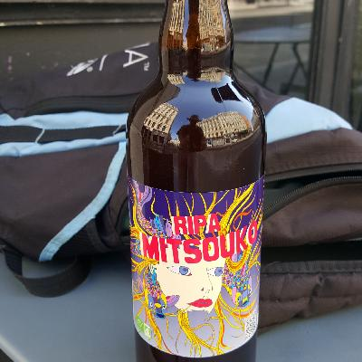
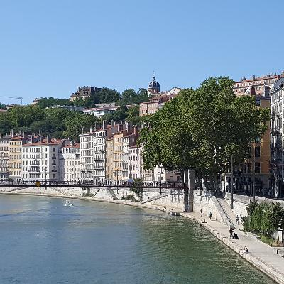
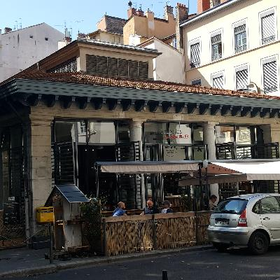

Back on the road, and climbing up along the Rhône.
Through Beaujolais, to Lyon
Back on the road, I went south. The ride to Mâcon was great, along a new bike path. The last 15 km or so was to a place called Romanènche-Thorins in Beaujolais. I was right next to Georges Duboeuf, so I checked out what was new. Actually, it was a little rainy starting in Mâcon, and the computer navigation send me down an unmaintained dirt road. Oops! Once I got food (by backtracking 6 km), all I wanted to do was watch Star Trek. In English. Very much in English.
The next day I went to the northern edge of Lyon, then east to a suburb along the Rhône. There's a ginormous hill to get into Lyon, it turns out - the river Saône goes though a narrow passage that wasn't on the recommended bike path. Actually, the bicycle infrastructure was pretty poor throughout Beaujolais - I mostly relied on the voice directions from my map application. The GPS file I downloaded send me up what was basially a hiking trail, and I of course got a flat.
Lyon
I took a break in Lyon, and saw some of the tourist areas.
 






Lyon to Villebois
Next up, it's East along the Rhône to a place called Villebois.
Villebois to Les Avenières
The next leg was nice. Not too many pictures, and it was only 65 km or so - since it's getting hilly, I got more conservative on the distance, so I got in at 4 PM.
I did have Yet Another Breakdown – it's the front luggage rack's turn to break. It broke at a really good time, when I was stopped, and about 1 km from my lunch stop. The way it's broken, I was able to kludge it back together with some heavy-duty cotton string and a couple of bungee cords; that'll be good enough to get me to September 13th.